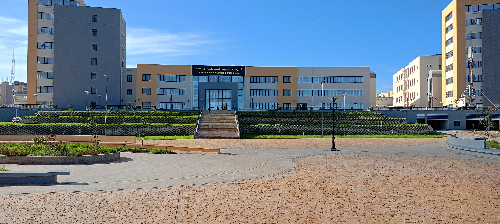
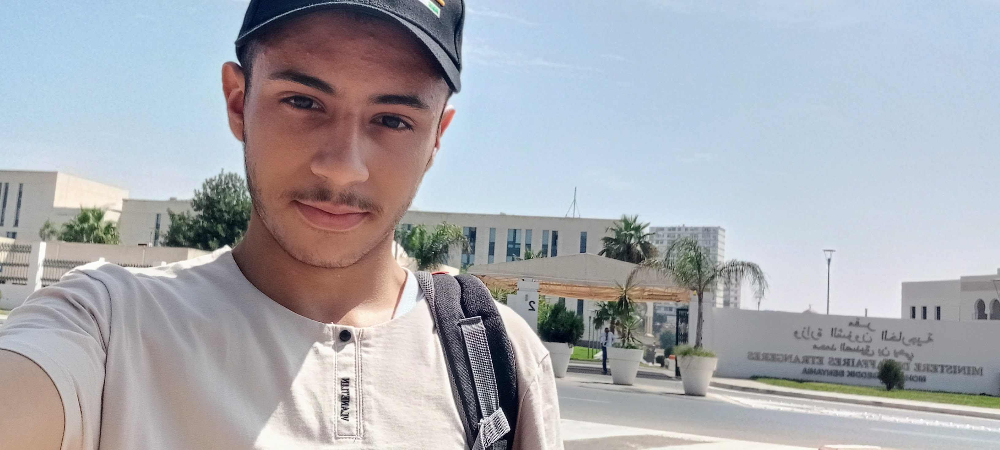

The National School of Artificial Inteence (ENSIA) is an institution of excellence for higher education whose vocation is to educate engineers speciing in the theory and practice of artificial inteence and data sciences. ENSIA graduates will have the capacity to develop and deploy practical and innovative solutions to the problems of the various socio-economic sectors (health, energy, agriculture, transport, etc.), thus contributing to the scientific and economic development of the country.
Information Technology A.k.a., IT, refers to the use of computers, software, networks, and electronic systems to store, process, transmit, and manage digital information.
Information and Communication Technology A.k.a., ICT, refers to the use IT and communication technology (i.e., the various ways in which IT is used to communicate, share information, and interact).
Essentials Refers to the fundamental and necessary components that are necessary for something to function and operate properly and effectively.
